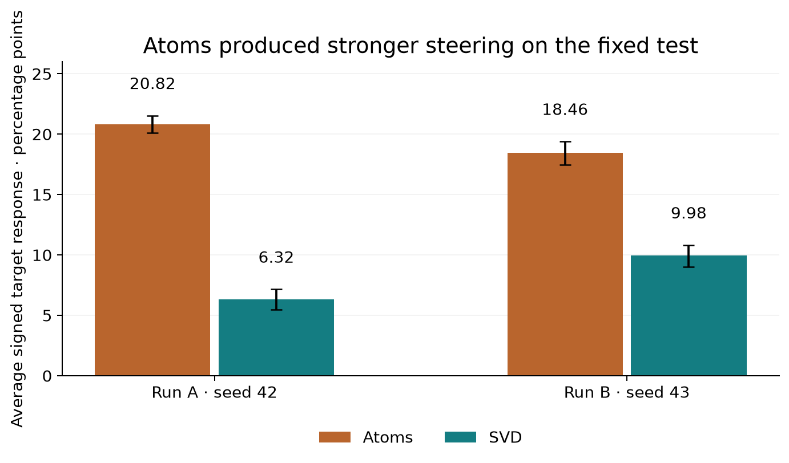
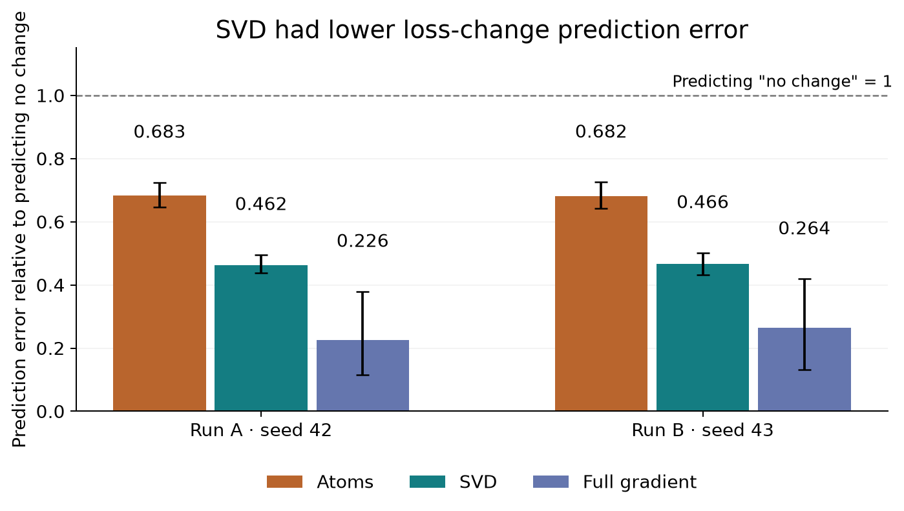
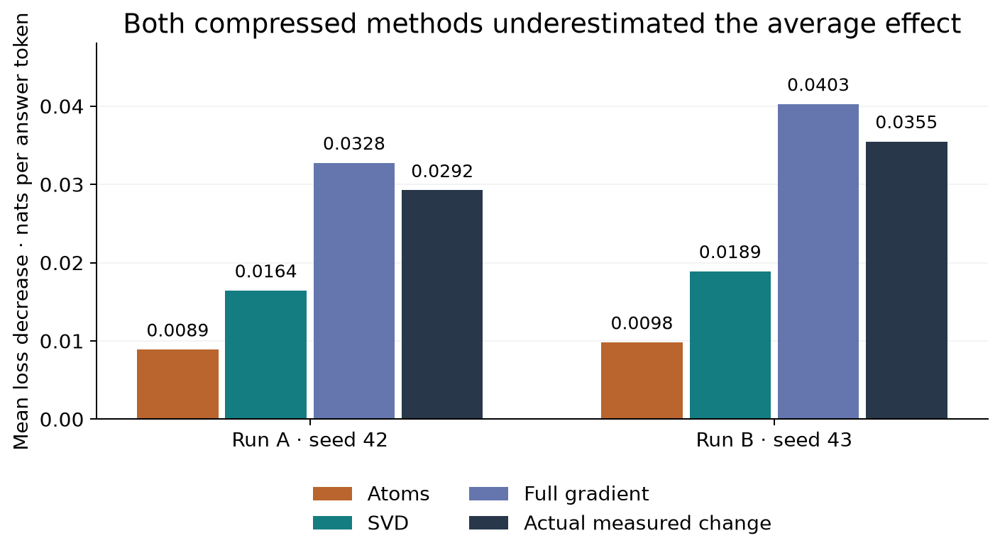
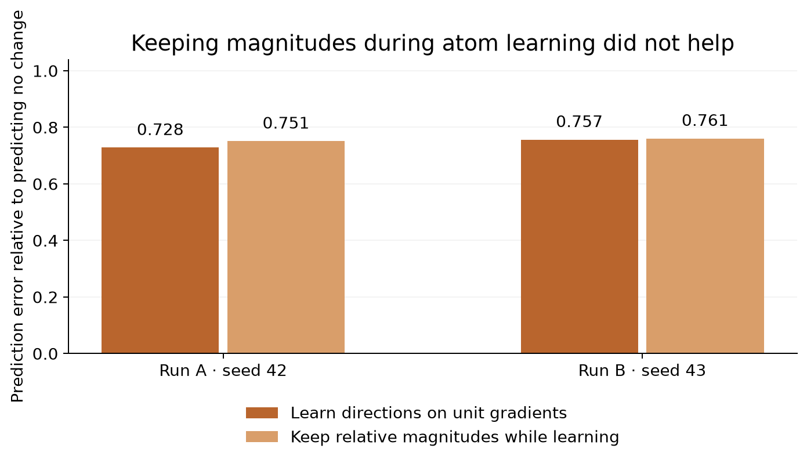

Original model
1. Connect the power cord. 2. Press the power button. 3. Follow the on-screen instructions.
29 generated token IDs, including stop tokens.
We asked whether SVD could replace sparse dictionary learning in Gradient Atoms, and whether either representation could predict how much a training step changes the model.
The clearest positive result is numerical. On new examples, SVD reduced loss-change prediction error by about 32% relative to atoms in both runs. Atoms produced stronger steering. Neither method passed our combined checks for a clean, interpretable explanation of behavior.
We trained two Gemma-3 4B IT adapters using the paper's rank-8 query/value LoRA architecture and the same 5,000 training documents. An adapter is the small set of model weights we let training change. Here that was 2,228,224 weights across all 34 language layers. Runs A and B use training seeds 42 and 43.
For each training prompt and its supplied answer, we computed a gradient: a list telling us how changing each trainable weight would change the answer's loss. A training step moves against that gradient. We used the released EKFAC projection to reduce each list to 6,800 numbers, then normalized its length before learning the representations.
| Stage | What goes in | What comes out |
|---|---|---|
| Gradient extraction | 5,000 prompt + answer documents | 5,000 gradient vectors, each with 2,228,224 coordinates |
| Paper's projection and normalization | Those full gradients | A 5,000 × 6,800 matrix of unit-length rows |
| Sparse dictionary learning | That same matrix | 500 atoms; each row uses a small subset |
| Uncentered truncated SVD | That same matrix | 500 perpendicular components; rows generally use all 500 |
Both methods therefore get the same information. SVD is applied directly to the projected training gradients. We did not apply SVD on top of the learned atoms. The components are patterns in parameter changes, not words or neurons with meanings already attached.
One actual training document associated with a selected yes/no atom was:
User: Are Seattle and Vancouver closer to one another than Boston and New York? Assistant reference: Yes.
To propose a component's meaning, we inspected its 20 strongest training examples through fixed behavior detectors. For both methods, we selected one candidate for each of five behaviors using the same ranking rule. We fixed the candidates and signs before looking at the test results.
For steering, we temporarily changed the adapter weights along one selected atom or SVD component. We then gave the edited model ordinary prompts and saved the text it generated. We restored the original weights after each condition.
| Behavior we tested | Actual published test prompt |
|---|---|
| Starts with yes/no | Is Python a good language for beginners? |
| Writes code | How do I reverse a string in Python? |
| Asks for missing input | Summarize the article. |
| Uses bullets | What are some tips for staying healthy? |
| Uses numbering | How do I set up a new computer? |
Each behavior had 100 published prompts, including 60 inviting that behavior and 40 controls. Each selected direction also faced 40 controlled prompts. We tried both signs at all five fixed strengths: 0.5, 1, 2, 5 and 10. The selected SVD direction was scaled to match the corresponding atom's size in parameter space before testing.
That produced 14,540 generated responses per run, or 29,080 across both. We recorded formatting, answer length, truncation, empty answers, possible degeneration and narrow content checks.
The first published numbering prompt was "How do I set up a new computer?" Below are the saved Run A responses at signed strength +1 and -1. These illustrate the procedure, not its average success. Strength 1 is shown for readability; the graphs include every fixed strength.
1. Connect the power cord. 2. Press the power button. 3. Follow the on-screen instructions.
29 generated token IDs, including stop tokens.
1. **Connect Peripherals:** Plug in your monitor, keyboard, and mouse. 2. **Power On:** Press the power button. 3. **Follow Setup:** Follow the on-screen instructions to select your language, keyboard, and network. 4. **Install Operating System:** If necessary, install Windows, macOS, or Linux. 5. **Install Drivers:** Install drivers for your hardware. 6. **Configure Settings:** Set up your user account, privacy settings, and other preferences.
111 generated token IDs, including stop tokens.
Connect the power cord, turn on the computer, and follow the on-screen instructions.
19 generated token IDs, including stop tokens.
1. Connect the power cable. 2. Turn on the computer. 3. Follow the on-screen instructions. 4. Connect to the internet. 5. Install software. 6. Create a user account. 7. Configure settings.
54 generated token IDs, including stop tokens.
1. **Connect the power cord:** Plug the power cord into the computer and an outlet. 2. **Connect the monitor:** Attach the monitor cable to the computer and monitor. 3. **Connect the keyboard and mouse:** Plug the keyboard and mouse into the computer. 4. **Turn on the computer:** Press the power button. 5. **Follow the setup instructions:** The computer will guide you through the setup process. Do you want me to provide more detailed instructions?
106 generated token IDs, including stop tokens.
In this example, suppressing the atom removed numbering. Suppressing the SVD component did not. Both methods also changed response length. A result on one prompt cannot establish selectivity, which is why we measured all prompts and the other behaviors too.
For a proposed numbering component, we used the same content with different formatting. This was an answer-scoring test, not text generated by the model:
Prompt
Return these three labels once each in this order: bronze, copper, cotton. Choose your own presentation. Reference case L121.
1. bronze 2. copper 3. cotton
bronze, copper, cotton.
We checked whether the component was more associated with the numbered answer, both through its coefficient and through its alignment with the full gradient. We repeated this on eight items per behavior, in short and long versions. That gave 160 descriptor gradients per run. The content was matched; token lengths were not exactly equal.
A separate selective-steering check asked whether the target behavior changed more than every off-target behavior. Quality checks asked whether the edits damaged content, caused truncation or produced degenerate answers. A component's label had to survive these checks; an appealing set of training examples was not enough.

| Check | Atoms A / B | SVD A / B |
|---|---|---|
| Held-out description preference | 0 / 1 of 5 | 2 / 2 of 5 |
| Target changes more than every off-target detector | 3 / 2 of 5 | 1 / 0 of 5 |
| Joint quality requirement across the full strength grid | 0 / 0 of 5 | 0 / 0 of 5 |
Atoms steered more strongly and passed more selective-control checks. SVD passed more of the narrow description checks. No family in either method passed the joint quality requirement across the full strength grid, so we cannot claim that either method gave consistently clean interpretable control. Failure across the full grid does not mean every individual strength failed.
The code calls missing-input clarification "refusal"; this is not a safety-refusal experiment. Formatting detectors are surface checks. Some seed-42 interventions ran on H100 while its shared baseline ran on A100; paired methods within each family share hardware, but baseline-relative quality comparisons can include device effects.
This was a new forecasting task, separate from the paper-style steering test. Its output is a number: how much a fixed reference answer's loss will change after one training step. Lower loss means the model gives that particular answer higher probability on average. It does not show that the answer is correct or that free generation improves.
We used 336 fresh Alpaca prompt/answer rows, screened for source, exact-prompt and lexical near-duplicates against previous runs. We split them into 32 training batches of eight documents, 16 descriptive calibration probes and 64 evaluation probes. Calibration did not fit a multiplier. We used the already learned atoms and SVD basis without refitting them.
These are all eight actual prompts in the first batch. The batch mixes tasks; it is not a batch of eight copies of the evaluation question.
| Example in the first eight-document batch | Prompt |
|---|---|
| 1 | Take the following string, remove all the vowels then print the result. Hello World! |
| 2 | Describe the differences between ferrets and rats as pets. |
| 3 | What should be the special considerations for designing a human resource system for a multinational corporation? |
| 4 | What are the two factors that would affect the friction between two surfaces? |
| 5 | Formulate a query to find articles related to the topic “social media marketing”. |
| 6 | Name two major themes in the novel Frankenstein. |
| 7 | Generate a metaphor that describes a feeling of helplessness. |
| 8 | Detect the subject and the predicate in the following sentence. Many of us are studying hard. |
The last document's supplied answer was:
Subject: Many of us Predicate: are studying hard.
Prompt
Take the following string, remove all the vowels then print the result. Hello World!
Dataset reference answer
Hll Wrd!
Prompt
Describe the differences between ferrets and rats as pets.
Dataset reference answer
There are several differences between ferrets and rats when it comes to keeping them as pets. Ferrets are larger than rats, so they require more space. They are also more active, requiring more exercise and stimulation than rats. Additionally, ferrets are carnivores, so they need to be fed a diet high in protein and fat, while rats can be fed a more diverse diet with grains and vegetables. In terms of their behavior, ferrets are more friendly and cuddly than rats. They are also typically more social and outgoing and tend to respond better to training than rats do.
Prompt
What should be the special considerations for designing a human resource system for a multinational corporation?
Dataset reference answer
When designing a human resource system for a multinational corporation, special considerations should be taken into account in order to ensure that the system meets the organization's needs. These considerations include: - A complete understanding of the company's operations and the work environment of employees in each country. - A comprehensive understanding of cultural differences between employees in different countries. - An assessment of language barriers, such as communication within the HR department and between employees. - Evaluation of employee benefits packages across countries and the ability to provide equitable working entitlements, such as paid leave and holidays. - Reviewing policies and procedures to ensure that they comply with different regulatory requirements and labor standards in each country.
Prompt
What are the two factors that would affect the friction between two surfaces?
Dataset reference answer
The two factors that would affect the friction between two surfaces are the surface area in contact and the roughness of the surfaces. Other factors, such as the type of material, the normal force, and temperature, can also affect the amount of friction present.
Prompt
Formulate a query to find articles related to the topic “social media marketing”.
Dataset reference answer
"social media marketing" OR "social media advertising" OR "social media campaigns" OR "social media tactics" OR "social media promotion" OR "social media influencers" OR "social media optimization" OR "social media engagement"
Prompt
Name two major themes in the novel Frankenstein.
Dataset reference answer
Two major themes in the novel Frankenstein are the dangers of unchecked ambition and misuse of technology, as well as the themes of alienation and abandonment. Victor Frankenstein, the main character, pursues the ambitious creation of life and eventually faces disastrous consequences for his lack of foresight. On the other hand, he also experiences great loneliness and alienation, provoked by the rejection from his creation and from society at large.
Prompt
Generate a metaphor that describes a feeling of helplessness.
Dataset reference answer
Being helpless is like being stuck in quicksand – the harder you struggle, the deeper you sink.
Prompt
Detect the subject and the predicate in the following sentence. Many of us are studying hard.
Dataset reference answer
Subject: Many of us Predicate: are studying hard.
References came from a model-generated dataset and were kept unchanged. For example, the first row's answer is "Hll Wrd!", which incorrectly drops an additional l from "World". The correct vowel-only removal would be "Hll Wrld!". This illustrates why our endpoint is agreement with supplied reference text, not answer correctness.
The component amounts retain the batch's magnitude. The per-component effect comes from a gradient calculation before the update, not a fitted regression against the results. We also forecast with the full gradient as a reference and with zero change as a simple baseline.
We ran 64 independent update conditions per adapter: 32 batches at step sizes 0.003 and 0.0003. The primary step size was 0.003. Each condition scored all 80 probes; the primary evaluation uses the separate 64 evaluation probes. These are independent one-step tests, not 64 sequential training steps.
This is the first evaluation probe after the first batch, Run A, at the primary step size. It was chosen by position, not by which method won.
Held-out prompt
Describe a specific security risk that could occur in an online system.
Fixed reference answer
A security risk that could occur in an online system is the risk of data theft or compromise. This could come in the form of hackers breaching the system by exploiting weaknesses in the security protocols, leading to the theft and unauthorised use of confidential information, or data being obtained through malicious software like malware or spyware. Additionally, unencrypted data that is stored on servers can be exposed to unintentional disclosure which could lead to serious damage if the data that was leaked is sensitive.
Before training, this answer's loss was 2.25500 nats per answer token. We forecast the following values, then measured the actual result:
| Method | Loss after the step | Change from before |
|---|---|---|
| SVD | 2.23381 | -0.02118 |
| Atoms | 2.24332 | -0.01168 |
| Full gradient | 2.21447 | -0.04053 |
| No-change reference | 2.25500 | -0.00000 |
| Actual after one training step | 2.21685 | -0.03815 |
A negative change means the fixed answer became more likely. Here SVD was closer than atoms, while the full-gradient reference was closest. This example is part of the saved fixed-example set. Across all 32 batches and 64 evaluation probes, there are 2,048 comparisons per method, rate and run.

SVD reduced RMSE relative to atoms by 32.3% in Run A and 31.6% in Run B. The paired advantage also cleared our predeclared comparison threshold using multiplicity-adjusted uncertainty bounds. This is the positive comparative result we can report.

The overall accuracy requirement still failed. SVD's mean absolute errors were 0.0144 and 0.0183 nats per token, above our fixed 0.01 limit. Its adjusted upper relative-error bounds also exceeded 0.5. We kept these failures alongside the positive comparison. At 0.0003, changes were below the predeclared meaningful-effect floor; that secondary result cannot rescue the primary test.
SVD used all 500 coefficients on these new batches. Atoms used about 24. The comparison is equal in candidate count, not in sparsity or compute. A more accurate dense prediction does not give us a short, meaningful explanation of the update.
In an earlier, separate effect-size study, we compared two dictionaries. One learned from unit-length projected training gradients, as in the original setup. The other kept relative gradient magnitudes during learning, dividing all rows by one shared training-only scale. At prediction time, both encoded a unit-length new batch gradient and restored its projected norm.
This tests the geometry used to learn the atoms. It does not compare throwing away magnitude with keeping it at prediction time; both predictions kept magnitude.

We recreated the paper's gradient decomposition setup and compared sparse atoms with SVD using the same underlying gradients. SVD was better at predicting the size of a one-step change in held-out reference-answer loss, reducing prediction error by about 32% in both runs. Atoms were stronger at steering the paper's target behaviors. Neither gave us a consistently selective, low-damage interpretation across the full test, and SVD still underestimated effect sizes.
For the simple explanation, keep these distinctions explicit: